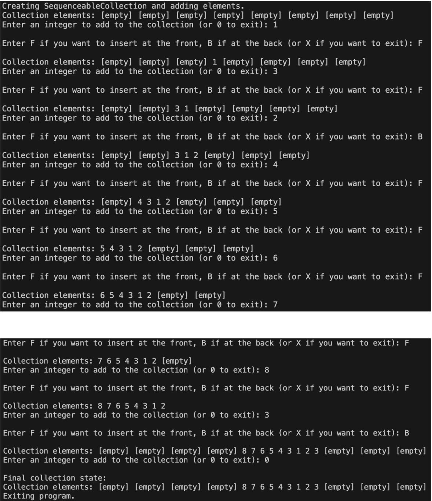

About the Program
This program simply involves using a sequncable collection to insert elements from either the front or the back, and showing how that collection expands overtime as you add more elements to it.
Context: I made this for a class project in CS 474 (Object Oriented Implementation). To be honest, it is not super interesting to me, but at least I learned how to create a sequencable collection in C++ and how to shift the elements in it with ease. :|
You may notice in some of the bullet points it says "Not utilized in final program". By that, it means it was not included in the main script: see, some requirements were added last minute in the prompt my professor gave us, so I did not have time to implement them.
VIDEO TO BE ADDED!
Features
- Added way to insert elements from either the front or the back of the collection
- Added way to display the current elements in the collection
- Added way to show how the collection expands as more elements are added
- Added way to remove elements from either the front or the back of the collection (Not utilized in final program)
- Added way to insert elements based on index value (NOT used in final program)
Screenshots
TO BE ADDED!
Possible output for the program!
Development Status
I developed it from 11/5/2025 to 11/15/2025, so 10 days of development!